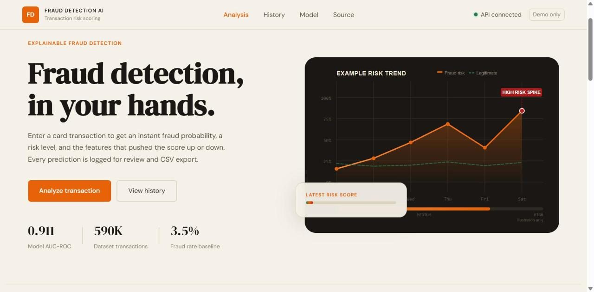

binary classification · IEEE-CIS · 590,540 transactions
Fraud Detection System
Scores card transactions for fraud risk in real time and explains every score for the analyst who acts on it.
- 0.911 AUC-ROC
- 590K transactions
- 106 features
- XGBoost
- SHAP
- SMOTE
- FastAPI
- Docker
- GitHub Actions